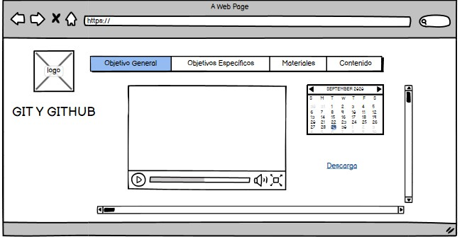

GIT y GITHUB
Objetivo General
Realizar un objeto virtual de aprendizaje a través de tecnologías basadas en html y ccss cuyo fin es poder adquirir destrezas en el desarrollo de sitios web en la parte de diseño, por medio de GIT y GITHUB.
Objetivos Especificos
- Dar a Conocer que es la plataforma GIT y GITHUB, sus funciones,
- Realizar una OVi, utilizando las plataforma GIT y GITHUB
- mostrar por medio de información imágenes, videos y sonido las diferentes funciones e importancia de las plataforma GIT Y GUITHUB
Materiales
Videos
Preguntas Frecuentes de GIT y GITHUB
https://www.youtube.com/watch?v=YlBy34ECh2s
Qué es GIT y GITHUB para principiantes
https://www.youtube.com/watch?v=jGehuhFhtnE
inicio rápido para principiantes
https://www.youtube.com/watch?v=hWglK8nWh60
video Descarga
https://www.youtube.com/watch?v=ES2xtLyI-B8
Textos
Introducción a GIT y GITHUB
https://desarrolloweb.com/articulos/introduccion-git-github.html
Diferencia de GIT y GITHUB
https://kinsta.com/es/base-de-conocimiento/git-vs-github/
Descargas
https://git-scm.com/
https://github.com/
Maquetacion
